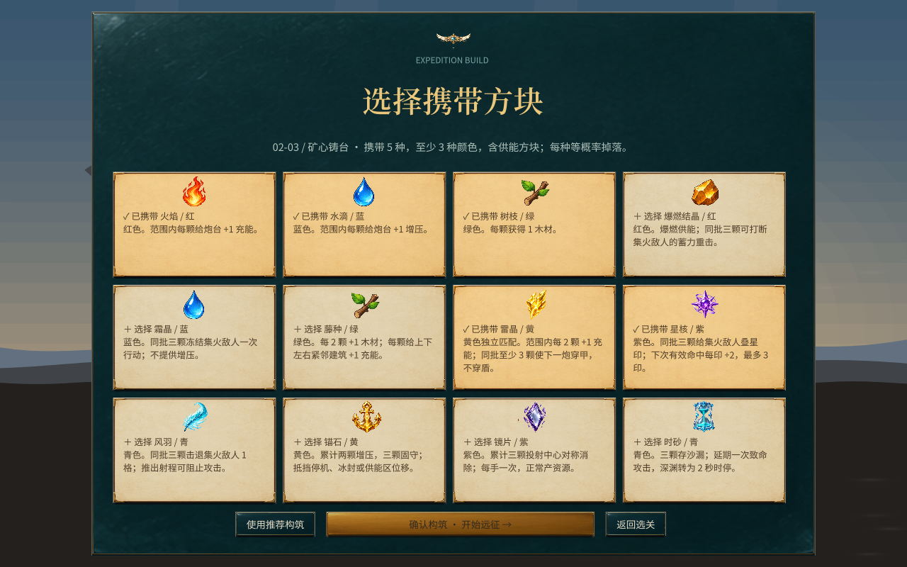

同色，也能分工
火焰与爆燃同属红色，却分别承担供能和打断。
消除工坊 / 棋盘
颜色相同就能混消，特质不同就有不同收益。开战前，你先决定棋盘里会掉下什么。
火焰与爆燃同属红色，却分别承担供能和打断。
四连、T/L与五连留下特殊棋子，继续引爆整行、区域或整种颜色。

同色带两种，该色掉得更多。颜色少更好连，也会改木材和技能票的量。
7×7 起，最多 9×9。向右加列、向下加行。原棋子、特殊棋和建筑留在原地。
从按种类匹配改成按颜色。同色不同资源可以混消。
入场前用数量和颜色约束决定资源池。
扩到十二种时仍是六色。加上固守、镜像、沙漏，不新增匹配色。